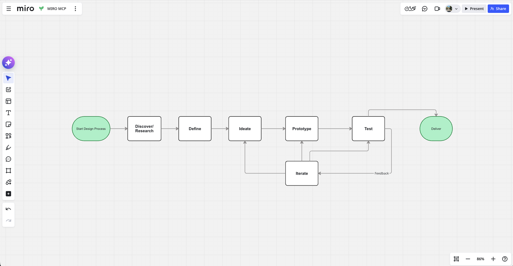
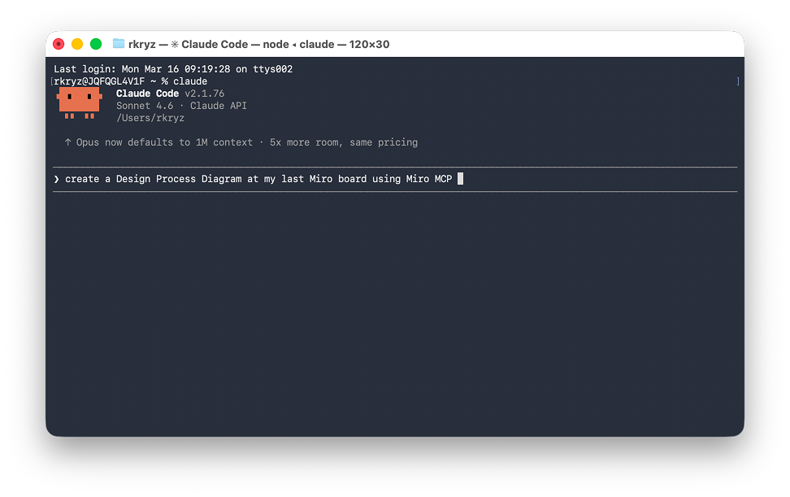
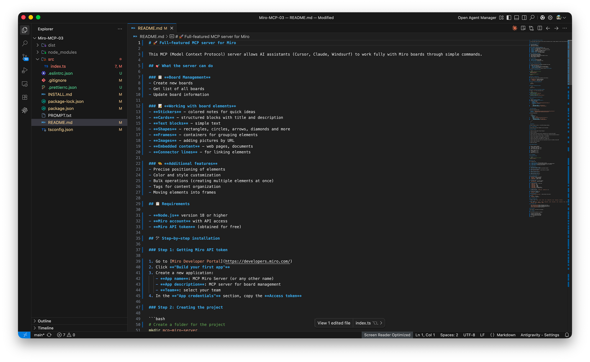

Product Design · Design Engineering · AI Infrastructure
Miro MCP Server
I built the AI-to-Miro bridge before Miro had one.
A custom MCP server that connects any AI IDE to Miro — letting designers create, organize, and retrieve board content through natural language. Designed and shipped June 2025, six months before Miro's own MCP beta.

AI could structure the thinking. Miro couldn't receive it.
Miro sat at the center of high-leverage design work — discovery workshops, research synthesis, service blueprinting. LLMs were becoming genuinely useful for structuring information and generating frameworks. But the two worlds were completely disconnected: every AI-assisted workflow required a manual rebuild step inside Miro.
A researcher with AI-generated clustering ready to go still spent 45 minutes rebuilding it sticky note by sticky note. The cause was structural: no AI-to-workspace bridge existed for visual collaboration.
Core Insight
The problem wasn't "Miro needs automation." It was that no infrastructure existed for AI to act inside the workspace where visual design work happens.
My Responsibilities
Product Framing + Strategy
System Architecture Design
Promptable Interaction Design
MCP Server Implementation (Antigravity)
Reliability Engineering
Workflow Validation (Claude Code)
I identified the gap six months before Miro did
I framed this as design infrastructure, not a developer integration. The product concept was a four-layer system: IDE → MCP → LLM → Miro. That architecture transformed the project from a one-off integration into infrastructure that outlasts any single AI client.
Design Decision
MCP as the interoperability layer instead of a single IDE. More upfront architecture — but the only path to a portable, professional tool.
- 4-layer system model: IDE → MCP → Miro API → Visual output
- 8 use case categories mapped — from discovery boards to service blueprinting
- Positioning framework: design infrastructure, not API wrapper

I mapped every friction point before writing a line of code
I decomposed real Miro workflows into five operational categories and scenario-mapped four workflow types. The audit surfaced clear baselines: 30–45 min for workshop setup, 15–20 min per diagram. These numbers defined the gap the product needed to close.
- Task taxonomy — 5 operational categories (create, edit, retrieve, group, batch)
- 4 workflow types scenario-mapped
- Quantified friction baselines as design targets

Visual systems, not individual objects
The core product decision: build for higher-order visual systems — complete board architecture, nested layouts, mind maps, connector logic, bulk operations — not basic CRUD. I ran API feasibility testing against every Miro endpoint to separate stable object types from fragile ones before committing to features.
Design Decision
Basic CRUD was the floor, not the product. The capability taxonomy — which visual structures to support, in what order — shaped the entire interaction model.
- Full capability taxonomy — 12+ object types including nested structures and bulk ops (100+ items)
- API feasibility map — stable vs. fragile endpoints
Designing the invisible layer: intent → board structure
The hardest design work was shaping how LLMs interpret natural-language requests and translate them into predictable Miro actions. I applied design principles to MCP tool descriptions — naming, structure predictability, output readability — then validated them through prompt prototyping in Claude Code. The goal: an interaction model reliable enough for professional use without requiring prompt engineering from end users.
Why This Mattered
Most MCP implementations are built by engineers for engineers. This one was designed for designers and facilitators — tool descriptions work with how those users naturally describe visual work.
- Complete MCP tool description system optimized for non-engineer use
- Validated prompt library — tested across 8 core workflow scenarios
Reliability over completeness
Some Miro object types were unstable through the API. I chose reliability over coverage — validation layers, fallback patterns, sticky-note alternatives for fragile types. Every output was validated in live Miro boards for presentation quality, not just technical correctness.
Design Decision
70% of object types with full reliability beats 100% with unpredictable failures. Professional tools produce output you can use in front of clients.
- Validation layer + fallback patterns for all Miro API calls
- All generated artifacts confirmed presentation-ready in live boards
- First working release: June 7, 2025
Nine phases from observation to infrastructure
01
Opportunity
Framing
Define the gap
02
Workflow
Audit
Map friction
03
Use Case
Prioritization
Focus scope
04
Capability
Architecture
Design system
05
Promptable
Interaction Design
AI translation layer
06
API
Prototyping
Build + Claude Code
07
Reliability
Hardening
Fallbacks + validation
08
Visual
Validation
Live board tests
09
Cross-IDE
Positioning
Infrastructure
Opportunity Framing
Identified the AI-to-Miro gap and framed the product as design infrastructure.
Workflow Audit
Mapped real UX and research workflows to quantify friction baselines.
Use Case Prioritization
Focused capability development on the 8 highest-value UX workflow scenarios.
Capability Architecture
Designed the full capability model around visual systems, ran API feasibility tests.
Promptable Interaction
Shaped MCP tool descriptions so any LLM reliably translates natural language into Miro actions.
API Prototyping
Built the MCP server with Antigravity, validated tool behavior through Claude Code.
Reliability Hardening
Introduced validation layers, fallback patterns, and controlled parameters.
Visual Validation
Tested every generated structure type in live Miro boards for presentation quality.
Cross-IDE Positioning
Confirmed MCP portability; positioned the system as infrastructure, not a single-editor demo.
From operational drag to promptable infrastructure
Workshop Facilitation Accelerated
Workshop prep moved from 30–45 minutes of manual Miro setup to 5–10 minutes of prompted generation and review. Facilitators get a first-draft board fast enough to focus on content rather than construction.
Diagrams on Demand
Process diagrams that previously required careful manual arrangement in Miro now generate on demand from a natural-language description. The speed matters most in workshops and real-time alignment sessions, where a 20-minute setup delay breaks the room's momentum.
Scale That Wasn't Possible Before
Large-volume content handling moved from error-prone manual work to structured batch operations of 100+ items — making the system relevant for research-heavy synthesis workflows, not just individual diagramming.
Infrastructure, Not a Demo
The system runs in any MCP-compatible IDE — validated in Claude Code, built with Antigravity, designed from the start to outlast any single AI client. That portability is what separates a working tool from a workflow that only works in one place.
Three things this project taught me
Framing is the product
I could have positioned this as "an API wrapper for Miro." Instead, I positioned it as design infrastructure for discovery, workshops, and research operations. That framing change wasn't cosmetic — it made the project commercially legible to design teams, innovation labs, and agencies who would never search for an API wrapper but would immediately understand "AI-native design infrastructure." Product framing is design work.
Reliability is a design decision
The hardest design choices in this project weren't about what features to build. They were about which object types to support when the API couldn't guarantee stable results. Designing for trust in an AI-driven workflow meant choosing graceful degradation over completeness — a decision that made the difference between a demo and a tool people could use in front of clients.
Anticipating infrastructure needs is a design leadership skill
I shipped this six months before Miro announced its own MCP beta — not because I had inside information, but because the gap was legible from first principles. Understanding where design workflows are heading, identifying the infrastructure they'll need, and building it before the platform provides it: that's the skill that made this project worth doing.
I didn't use AI in this project. I built the layer that makes AI operational.
This project is unusual in the portfolio: AI was not a tool I reached for during the design process. AI was the design process. I built the bridge that makes AI operational inside Miro — the infrastructure that turns natural-language intent into structured visual artifacts.
Antigravity
Full MCP server implementation — wrote, tested, and iteratively refined the complete codebase.
Functional, cross-IDE MCP server with full board management and visual system capabilities.
Human/AI split: Antigravity as the implementation environment. All architectural decisions, capability design, interaction model, and reliability strategies were mine.
Claude Code
Prompt prototyping to validate MCP tool descriptions; live workflow validation across all 8 use case categories.
Confirmed that tool descriptions produced consistent, usable Miro structures under varied natural-language inputs.
Human/AI split: I issued the validation commands and evaluated the quality of generated board structures. Claude Code executed the MCP calls.
MCP Protocol
Architectural decision — adopted as the interoperability standard rather than building for a single editor.
System works in any MCP-compatible IDE. The protocol itself is what makes this infrastructure rather than a single-client tool.
Human/AI split: MCP is a protocol, not a model. I chose it as the architecture. Any LLM becomes the reasoning layer at runtime.
Miro API
Execution layer — all visual output produced through the Miro REST API.
Natural-language intent → MCP server → Miro API → structured board artifacts. The 4-layer pipeline works end-to-end.
Human/AI split: I designed the capability set and reliability constraints. The API executes the resulting board operations.
Need someone who builds the infrastructure, not just uses it?
I identify workflow gaps, design the architecture, and ship it — before the platform does. If you're building AI-native design operations, need custom MCP integrations, or want to turn repetitive process work into promptable infrastructure — let's talk.
Get in touch